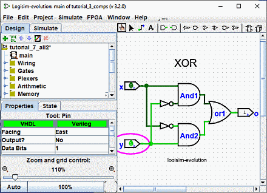

הקודם:שלב 3: הוספת טקסט
שלב 4: בדיקת המעגל שלך
הצעד האחרון שלנו הוא לבדוק את המעגל שלנו כדי לוודא שהוא באמת עושה את מה שהתכוונו. לוגיסים כבר הדמיית המעגל. בואו נסתכל שוב איפה היינו.

שימו לב שפיני הקלט מכילים שניהם 0s; וכך גם פין הפלט. זה כבר אומר לנו שהמעגל מחשב כבר 0 כאשר שתי הכניסות הן 0.
עכשיו לנסות שילוב נוסף של כניסות. בחר בכלי "Poke" ( )
ולהתחיל לתקוע את התשומות על ידי לחיצה עליהם. בכל פעם שאתה תוקע קלט, הערך שלו ישתנה. ל
לדוגמה, אנו עשויים לתקוע תחילה את הקלט התחתון (y).
)
ולהתחיל לתקוע את התשומות על ידי לחיצה עליהם. בכל פעם שאתה תוקע קלט, הערך שלו ישתנה. ל
לדוגמה, אנו עשויים לתקוע תחילה את הקלט התחתון (y).

כאשר תשנה את ערך הקלט, Logisim תראה לך אילו ערכים עוברים לאורך החוטים על ידי משיכתם באור ירוק לציון ערך 1 או ירוק כהה (כמעט שחור) לציון ערך 0. אתה יכול גם לראות שהפלט הערך השתנה ל-1.
עד כה, בדקנו את שתי השורות הראשונות של טבלת האמת שלנו, והפלטים (0 ו-1) תואמים את הרצוי תפוקות.
| x | y | x XOR y |
|---|---|---|
| 0 | 0 | 0 |
| 1 | 0 | 1 |
| 0 | 1 | 1 |
| 1 | 1 | 0 |
על ידי העברת המתגים דרך שילובים שונים, נוכל לאמת את שתי השורות האחרות. אם כולם תואמים, אז סיימנו: המעגל עובד!
כדי לאחסן את העבודה שהושלמת, אולי תרצה לשמור או להדפיס את המעגל שלך. ה| קובץ | menu מאפשר זאת, וכמובן שהוא גם מאפשר לצאת מלוגיסים. אבל למה להפסיק עכשיו?